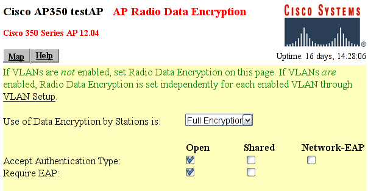

5. Authenticator: Setting up the Authenticator (Access Point)
During the authentication process, the Authenticator just relays all messages between the Supplicant and the Authentication Server (RADIUS). EAPOL is used between the Supplicant and the Authenticator; and, between the Authenticator and the Authentication Server, UDP is used.
5.1. Access Point
Many access point have support for 802.1X (and RADIUS) authentication. It must first be configured to use 802.1X authentication.
 | Configuring and setting up 802.1X on the AP may differ between vendors. Listed below are the required settings to make a Cisco AP350 work. Other settings to TIKP, CCMP etc. may also be configured. |
The AP must set the ESSID to "testnet" and must activate:

Figure AP350: The RADIUS configuration screen for a Cisco AP-350
802.1X-2001: Make sure the 802.1X Protocol version is set to "802.1X-2001". Some older Access Points support only the draft version of the 802.1X standard (and may therefore not work).
RADIUS Server: the name/IP address of the RADIUS server and the shared secret between the RADIUS server and the Access Point (which in this document is "SharedSecret99"). See figure AP350.
EAP Authentication: The RADIUS server should be used for EAP authentication.

Figure AP350-2: The Encryption configuration screen for a Cisco AP-350
Full Encryption to allow only encrypted traffic. Note that 802.1X may be used without using encryption, which is nice for test purposes.
Open Authentication to make the Supplicant associate with the Access Point before encryption keys are available. Once the association is done, the Supplicant may start EAP authentication.
Require EAP for the "Open Authentication". That will ensure that only authenticated users are allowed into the network.
5.2. Linux Authenticator
An ordinary Linux node can be set up to function as a wireless Access Point and Authenticator. How to set up and use Linux as an AP is beyond the scope of this document. Simon Anderson's Linux Wireless Access Point HOWTO may be of guidance.